01 · The motivation
Finding lines in a sea of pixels
We run edge detection on a photo and get a binary image — bright edge pixels on a black background. The edges of the building are there, but to the computer it is just a set of disconnected pixels with gaps. How do we recover the actual lines?
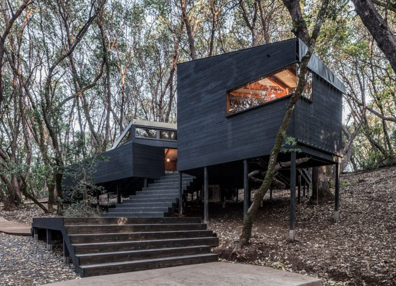
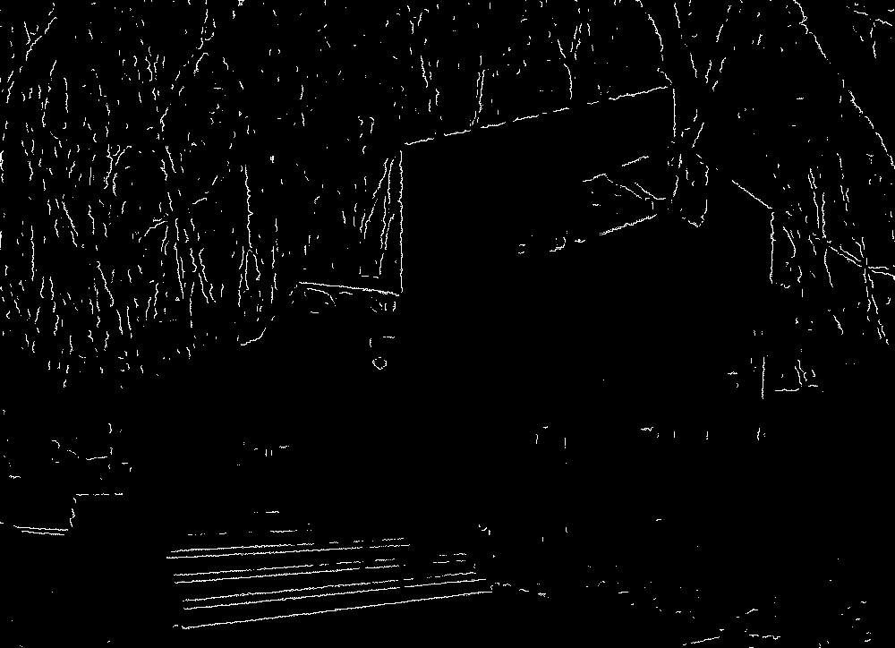
Represent the shape you are looking for with a few parameters. Transform every candidate image point into the set of all parameter combinations it could belong to. After processing every point, the parameter combinations that received many contributions are assumed to be real objects in the image.
02 · The maths
From image space to parameter space
A straight line has two parameters: gradient m and y-intercept c.
Now the clever flip. We rearrange so that x and y are the constants (they come from a fixed image point) and m and c become the variables:
In (m, c) space this is itself a straight line — with gradient −x and intercept y. So a single point in the image becomes a whole line in parameter space. Every (m, c) along that line is one possible image line passing through the original point.
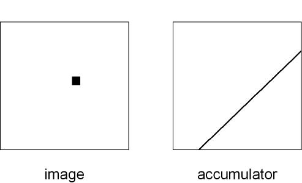
If two image points lie on the same image line, their two parameter-space lines must cross at the single (m,c) describing that shared line. Collinear points → intersecting parameter lines. That intersection is the answer we hunt for.
03 · Interactive
Point–line duality, live
Click in the image panel to drop edge points. Watch each one become a line in parameter space. When points are collinear, their lines pile up on one crossing — and the winning line snaps back into the image.
Tap / click the left panel to add points. Try to place three in a row.
The four lecture points are (0,0), (−10,10), (2,4), (8,−8). Three of them lie on y = −x, so three parameter lines cross at m=−1, c=0.
04 · The lecture's worked example
Four points, by hand
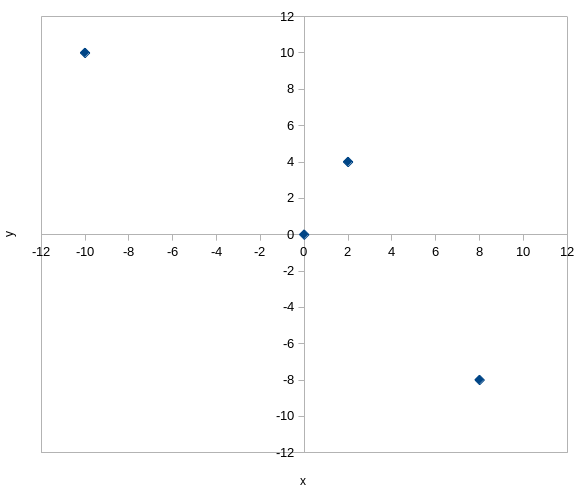
Substitute each point into c = −x·m + y to get its parameter-space line:
Point (0, 0)
c = −0·m + 0 ⟹ c = 0
Point (−10, 10)
c = −(−10)·m + 10 ⟹ c = 10m + 10
Point (2, 4)
c = −2m + 4
Point (8, −8)
c = −8m − 8
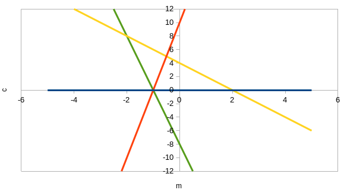
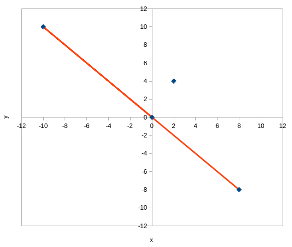
05 · Doing it programmatically
The accumulator array (voting)
Drawing graphs by eye doesn't scale. Instead we build a 2-D accumulator: columns are values of m, rows are values of c. Every cell starts at zero. For each image point we walk along its parameter line and increment (vote for) every cell it crosses, rounding where needed.
Step through each image point's votes. Watch cells reach a count of 3.
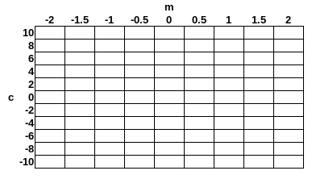
Choose a threshold N
The minimum votes for a cell to count as a real line. Here we pick N = 3. On a real image you might require 100 or 200.
Find local maxima
Search the accumulator for cells whose count meets or exceeds N. Here, one cell hits 3: m = −1, c = 0.
Read back the line
That cell gives y = −x. Note: the accumulator tells you the line, not its start/end points — those must come from the original image.
06 · The catch
What about vertical lines?
This is the problem the lecture asked you to spot. A vertical line in the image has gradient…
An infinite gradient (and infinite intercept) cannot be stored in a finite accumulator array. The Cartesian y = mx + c form simply breaks for vertical lines. The fix is to change how we describe a line entirely — using polar coordinates.
"Why are polar coordinates usually used rather than Cartesian for Hough lines?" → Because the gradient of a vertical line cannot be accommodated (m = ∞ can't sit in the accumulator).
07 · The polar fix
Lines as (r, θ)
Instead of gradient and intercept, describe a line by the normal from the origin: its perpendicular distance r and the angle θ that normal makes with the x-axis. No gradient anywhere — so vertical lines are fine.
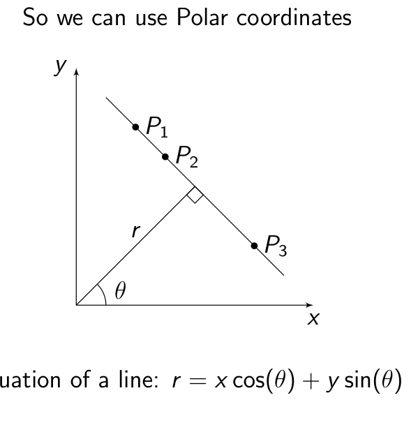
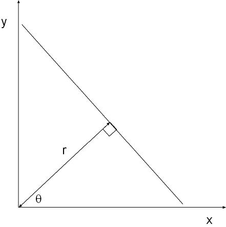
Drag the slider to rotate the normal. The line is always perpendicular to it. Note how even a vertical line (θ = 0) is handled with no infinities.
The accumulator now uses θ for columns and r for rows. Each image point votes along a sinusoid rather than a straight line — but the voting logic is identical.
Same four points, now in (θ, r) space.
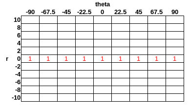
θ is the angle of the normal, so the line itself sits at θ − 90°. A normal at 45° with r = 0 (passing through the origin) gives the line y = −x — the very same answer as the Cartesian method.
08 · In practice
cv::HoughLines
OpenCV's built-in function maps directly onto everything above.
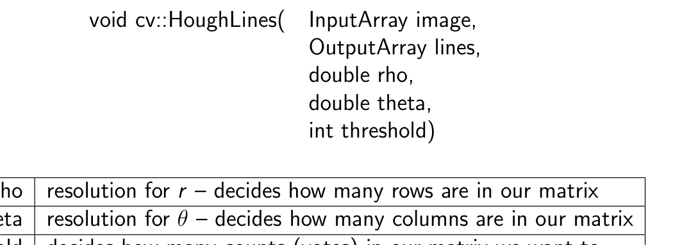
- image — input, a monochrome / edge-detected image.
- lines — output array of detected lines.
- rho — resolution for r; decides how many rows the accumulator has.
- theta — resolution for θ; decides how many columns the accumulator has.
- threshold — the minimum number of votes for a cell to be accepted as a valid line.
09 · Generalisation (Handout)
Beyond straight lines
The handout stresses that the Hough transform works for any analytically defined shape — you just need more parameters.
Circles
Use (x − x₀)² + (y − y₀)² = r². Three parameters (centre x₀, y₀ and radius r) → a 3-D accumulator. Each image point transforms into a conical surface in parameter space.
Arbitrary shapes
The Generalised Hough Transform uses a look-up table (R-table) that dictates which cells to increment. Powerful, but rarely used in practice per the handout.
The accumulator gives you the parameters of a line/shape and how many points voted for it — but no start or end points. Those endpoints must be recovered from the original image data.
10 · Check yourself
Quiz
From the COMP27112 visual quizzes. Pick an answer to reveal the feedback.
11 · Exam preparation
Past paper
A directly relevant question from a past COMP27112 paper.
Describe in detail the Hough Lines transform.
(You may use Cartesian or polar coordinates.)
Show a model-answer skeleton
- Purpose: a method to detect lines (linear features) in an edge-detected image, robust to gaps and noise.
- Pre-processing: enhance edges then threshold, giving a set of candidate points — some on lines, some not.
- The transform: a line y = mx + c is rearranged to c = −xm + y. A fixed image point (x,y) therefore becomes a line in (m,c) parameter space — every (m,c) on it is a possible line through that point.
- Accumulator / voting: a 2-D array indexed by the parameters; each point's parameter line increments every cell it passes through.
- Detection: after all points, search for local maxima ≥ a chosen threshold N; their coordinates give the line parameters and how many points contributed. Endpoints come from the original image, not the accumulator.
- Polar form: because vertical lines give m = ∞, use r = x·cos θ + y·sin θ with an (r, θ) accumulator instead.
- Generalisation (bonus): extendable to circles (3-D accumulator) and arbitrary shapes via a look-up table.
Related nearby topics that often appear with this chapter: edge detection (Sobel / Canny), convolution kernels, and thresholding — Hough always operates on a thresholded edge image, so these make natural lead-in parts.
One-screen recap
- Goal: find lines in a noisy, gap-ridden edge image.
- Trick: a point in the image ⇄ a line in parameter space (c = −xm + y).
- Collinear points → their parameter lines all cross at one (m,c).
- Accumulator: 2-D vote array; increment every cell each parameter line crosses.
- Answer: cells with votes ≥ threshold N are lines; read off (m,c).
- Vertical-line fix: polar r = x cos θ + y sin θ, (r, θ) accumulator.
- OpenCV: HoughLines(image, lines, rho, theta, threshold).
- Generalises to circles (3-D) and arbitrary shapes; gives lines, not endpoints.